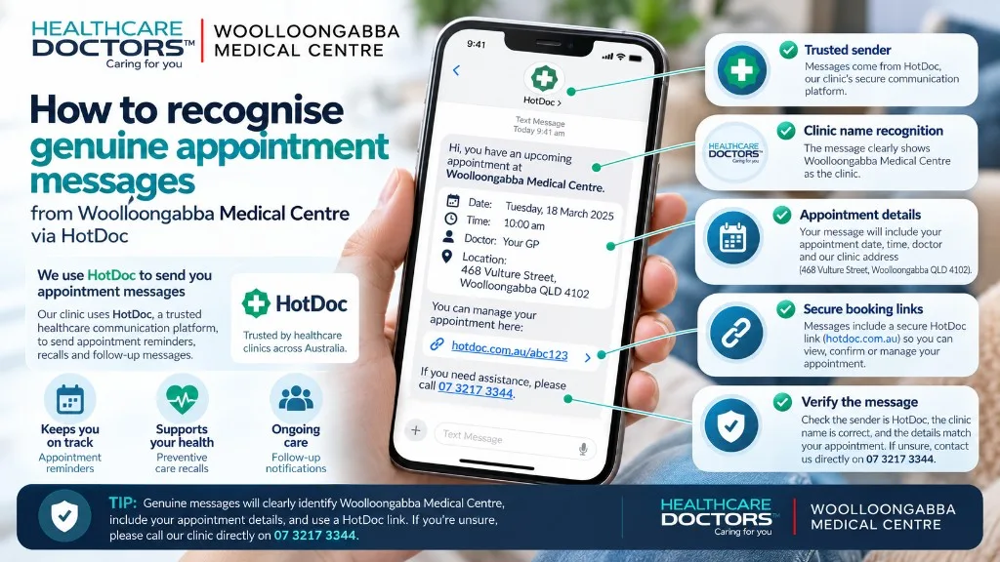

Why you may receive messages from us
We may contact you about appointments, reminders, recalls for results or follow-up, specialist or other correspondence that needs your attention, and Medicare bulk billing consent (Assignment of Benefit) requests. Messages can arrive as SMS, email or HotDoc app notifications, depending on the situation and your contact preferences.
Approved platform
We use HotDoc to reach you securely.
Woolloongabba Medical Centre uses HotDoc as an approved patient communication partner. A HotDoc message may ask you to verify your identity before you view a health message or complete a consent request. That verification is usually limited to details such as your last name and date of birth.
Examples of legitimate messages
- Appointment reminders — prompts to confirm, change or cancel an upcoming appointment, including HotDoc app push notifications.
- Recall messages — requests to book follow-up after test results, correspondence or recommended care.
- Correspondence notifications — alerts that a letter or report needs review with your doctor.
- Consent requests — short SMS or email links so Medicare bulk billing consent can be completed when required.
Legitimate HotDoc emails typically come from hotdoc.com.au or hotdocmail.com.au. Legitimate links usually open hotdoc.com.au or short links on htd.io. Content often includes your name, our practice name and appointment or care details already known to the clinic.
Warning signs of suspicious messages
- Requests for passwords, banking details, credit card numbers or one-time banking codes.
- Urgent threats, prizes, or pressure to act immediately without a clear clinical reason.
- Links that do not go to hotdoc.com.au or htd.io, or email addresses that only look similar to HotDoc.
- Poor spelling, unexpected attachments, or messages that do not mention Woolloongabba Medical Centre or your known care.
Call the clinic on (07) 3217 3344 before responding. Never provide passwords or banking details in reply to a message claiming to be from us or HotDoc.
HotDoc message questions
Does Woolloongabba Medical Centre use HotDoc?
Yes. We use HotDoc as an approved communication and booking platform for appointment reminders, recalls, correspondence notifications, consent requests and online booking.
What do legitimate HotDoc messages look like?
Legitimate messages usually name our practice, relate to your care, and use HotDoc domains such as hotdoc.com.au, hotdocmail.com.au or short links on htd.io. They may ask you to verify your last name and date of birth before viewing a health message. They never ask for passwords or banking details.
What should I do if I am unsure about a message?
Do not click the link or reply with personal or financial details. Call Woolloongabba Medical Centre on (07) 3217 3344 and ask reception to confirm whether a message was sent.
Will you ever ask for my banking password?
No. We will never ask for passwords, banking logins, or one-time codes for bank accounts by SMS, email or HotDoc. Treat any such request as suspicious.
This page provides general patient information about practice communications. It is not legal, financial or cybersecurity advice. If you believe you have shared sensitive details with a suspicious message, contact your bank or relevant provider and call the clinic if the message appeared to relate to your care.